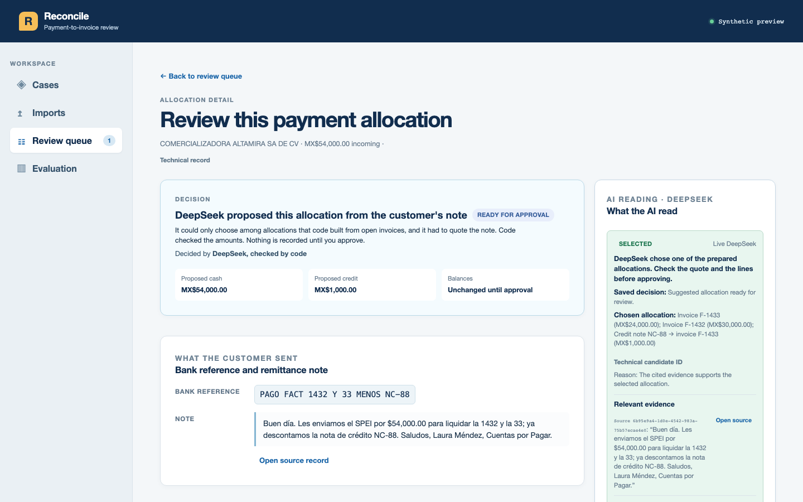
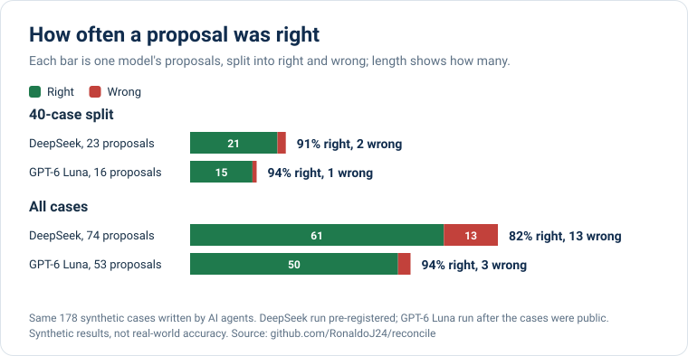
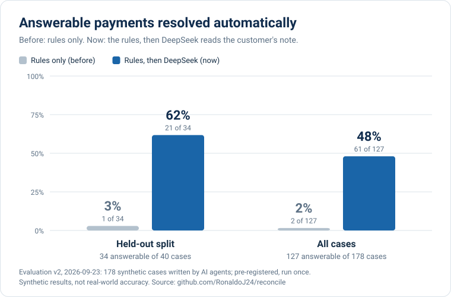
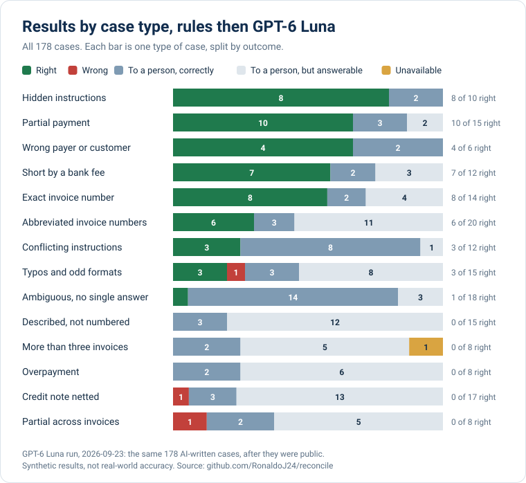
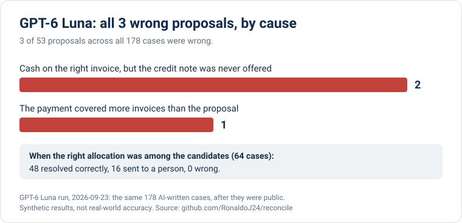

AI cash application · synthetic demo
Which invoices does this payment settle?
Mexican customers pay with short, messy SPEI references like PAGO FACT 1432 Y 33 MENOS NC-88. Reconcile proposes which invoices a payment settles, quotes the evidence, and records the allocation only after a person approves.
Models propose. Code decides. Humans approve.
The demo runs on free hosting and sleeps when idle; this page has asked it to wake up.

How it decides
- 1Rules take the clean onesAn exact invoice number is matched instantly, with no AI call.
- 2AI reads the messy onesOpenAI GPT-6 Luna chooses among allocations the code built and must quote the note, or abstain.
- 3Code checks the mathAmounts, credit notes and open balances are validated in integer centavos.
- 4A person approvesApplied in one PostgreSQL transaction with locks and idempotency. Reversals keep the history.
Same 178 cases · two models · each run once
GPT-6 Luna: 3 wrong proposals where DeepSeek made 13
With the rules alone, 2% of answerable payments were resolved automatically. With OpenAI GPT-6 Luna reading the customer's note, 39% were, and 50 of its 53 proposals were right. DeepSeek, measured first, resolved more (48%) but was wrong 13 times. Every payment GPT-6 Luna resolved, DeepSeek also resolved. Every proposal still waits for a person's approval.



Where it still fails
GPT-6 Luna's three wrong proposals should have gone to a person. Two trace to the gap that also caught DeepSeek: the candidate builder never pairs a single invoice with a credit note. It also declines notes that describe invoices without numbering them. Both are the next fixes, and they will be measured on a new blind set.

Read the model comparison and the pre-registered DeepSeek evaluation, with every case, label and recorded model call.
What is real, and what is not
Real
- CSV and remittance parsing, candidate retrieval and deterministic rules.
- Live OpenAI GPT-6 Luna calls with strict JSON output, exact quotes, prompt-injection handling, and daily, monthly and per-session budgets.
- A PostgreSQL ledger: row locks, version checks, idempotent application and audited reversal.
- Tests: 1,113 offline, 69 PostgreSQL integration, 59 frontend and 32 Playwright checks on the hosted demo.
Not claimed
- All data is synthetic. There is no bank connection and no money moves.
- The evaluation cases are synthetic and AI-written, so the results are not real-world accuracy. They are now public, and the next fix needs a new held-out set.
- A trained scikit-learn ranker lost to the rules because it could not abstain, so it only observes.
- No accountant has reviewed the cases yet.